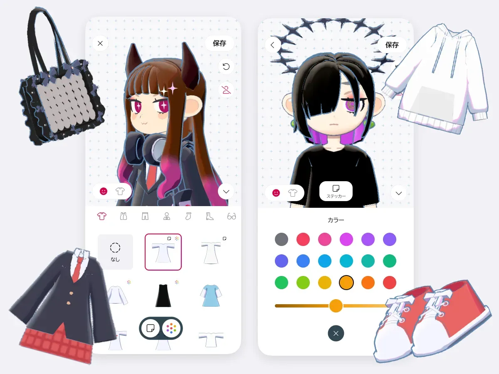

专注类工具跨界玩家 gogh：当捏人、3D 房间和番茄钟塞进同一个 App
市面上专注工具要么太干要么太闹，gogh 把 Lo-fi 音乐、虚拟形象、多人自习和效率套件打包在一起——它解决了什么老痛点，又带来了哪些新问题？
专注软件这个赛道的格局其实很清晰。一头是纯粹的工具型选手——番茄钟、待办清单、数据统计，干净利落但用久了像每天对着 Excel 表格；另一头是氛围向选手——各种 Lo-fi 电台、白噪音合集、桌面宠物，治愈感拉满但效率功能基本是赠品。然后还有一类想两头都沾的，通常是套皮换汤，把一个计时器上面加个像素风背景就敢叫"专注伴侣"。
gogh 不一样。它的官网上那句"角色创建 + 房间建造 + 效率工具的多人陪伴沙盒"不是营销噱头，拆开看每一块都是认真做了的。

它解决了一个老问题，但用了一套新解法
我用专注工具的历史基本就是一部"不断换着下载"的历史。从 Forest 到滴答清单，从 Focus@Will 到各种白噪音 App，我发现自己始终在做一件事：把三四个工具组合起来凑一套工作流。番茄钟是 A，音乐是 B，记录是 C，偶尔想有个"有人陪"的感觉还得去 Zoom 或某个线上自习室。每个工具单独都能打，但切来切去本身就是一种干扰。
gogh 的解法是把这些东西从底层塞进同一个 3D 房间里。你的虚拟形象在房间里待着就等于你在专注，番茄钟的进度、待办清单的勾选项、日记里的今天状态，全围绕着这个角色和房间转。Lo-fi 音乐是 Japanolofi Records 合作的原厂内容，不用自己找歌单。想"一起专注"的时候直接开房，最多 16 个人同频冲刺——不是开个摄像头的自习室，是真的大家的角色都在同一个 3D 空间里，能互相打招呼、能一起拍完照存成纪念。
这套整合的核心优势是零切换成本。我之前有个朋友试过用五六个工具凑工作流，最后发现光切换 App 这件事每天就要花二十多分钟。gogh 做的事情不是让每个单点功能都比竞品强，而是让你打开它之后就不用再打开别的。
差异化的三个实锤点
拍照模式：透明背景和绿幕是真生产力功能
很多人第一次看到 gogh 的拍照模式可能会觉得"花里胡哨"。但实际上这是它和同类工具拉开差距的一个硬功能。透明背景意味着你可以把自己捏的虚拟形象直接抠出来，放到 PPT 里当图示、放到文档里当配图、甚至做表情包——不需要再开个抠图工具走一遍。绿幕模式更直接：把房间背景换成纯绿，然后你在剪映或 Premiere 里一抠，角色就和真实场景合成了。
我见过有人用这个功能做短视频——自己的 gogh 角色坐在书桌前，背景是真实的房间，一边放 Lo-fi 一边录学习过程。以前要实现这个效果得先开 VTuber 软件、再开 OBS 推流、再做绿幕合成，门槛高到离谱。gogh 把整个流程压成了"打开相机 → 选绿幕 → 录"，具体操作和参数可以去gogh文档查。
Steam 创意工坊的社区深度
这是 gogh 在桌面端最有杀伤力的一张牌。创意工坊意味着你不只是用官方提供的家具和装扮——别人捏的整套房间、设计的角色外观、甚至做的音乐包，都能直接订阅到自己的 gogh 里。专注工具能做到这一层社区生态的，我印象里没有第二个。
社区的价值不只是"多了点素材"。当有人分享了一套极简主义风格的专注房间，你发现它比官方默认的更对胃口，这种感觉是普通"皮肤系统"给不了的。而且社区里还在出现教程贴——比如"30 分钟打造适合写论文的房间布局"，本质上是在帮新用户跳过"不知道怎么搭房间"的冷启动阶段。
专注认证证书和可罗达：正反馈循环的闭环设计
专注工具的普遍问题是"反馈弱"。番茄钟响了就是响了，完成了一个目标除了数据面板上多了一个数字，没有别的。gogh 用两层机制解决这个问题：日常靠可罗达宠物——每天跟着你，专注越多长得越好，像养了个电子宠物但它的状态和你的专注行为强绑定；里程碑靠专注认证证书——累计专注够一定时长、连续打卡够一定天数，系统自动生成一张带你角色和数据的证书，能存本地能分享。
这两个系统配合起来很妙：可罗达给的是实时小反馈（每天看一眼它的状态就知道今天要不要再加把劲），证书给的是事后仪式感（一个月后回头看，"我居然拿到了 50 小时的证书"比一堆柱状图更能带来成就感）。
它的取舍：好东西不便宜，便宜的东西不好用
当然 gogh 也不是完美的。想试试的话安装包从官方下载拿就行。不过它为这些优势付出的代价很实在，配置门槛是第一道坎。Steam 商店页写的最低配置是 i5-1235U + 8GB RAM，但实际上想跑流畅、想在多人房间里不掉帧，8GB 可能吃紧。移动端虽然也有，但 iPhone 老型号或者中低端安卓机基本跑不动这个 3D 房间。
第二个取舍是不是所有人都吃"虚拟形象"这一套。如果你从根子里就对捏人、搭房子没兴趣，那 gogh 的核心吸引力可能只剩下 Lo-fi 音乐和番茄钟——这时候你不如直接用一个 10MB 的番茄钟 App。gogh 的设计假设是"你愿意花一点时间打造自己的专注空间"，这个假设对很多人来说不成立。
还有个容易被忽略的问题：它不是游戏。Steam 标签里有沙盒、有多人，容易让人以为是个能玩半天的休闲游戏，但 gogh 没有通关条件、没有战斗、没有 PVP——所有"玩"的元素都是为了让你更愿意专注。如果你抱着"想玩个轻松游戏"的心态去下，大概率会失望。
选购结论
什么样的人适合 gogh？我觉得有两个明确的画像：一类是已经在用 Lo-fi、虚拟桌面、线上自习室这些分散工具、而且愿意尝试把它们整合到一起的人——你之前可能已经在多个工具之间切换，gogh 能帮你省掉这层摩擦；另一类是对二次元风格不排斥、愿意花半小时捏个自己的虚拟形象、把专注这件事变得更有仪式感的人。
什么样的人不适合？纯粹追求"最轻量的专注工具"的——你要的是 10MB 大小、不联网、打开就能倒计时的那种，gogh 的 3D 引擎和社区功能对你来说全是冗余；对虚拟形象和 3D 房间完全无感的——捏人搭房这部分你用不上，那剩下的效率工具单点能力又不如垂直赛道的老选手。
最后说一句：专注这件事本质上是和自己的惰性对抗。工具能帮的有限，但如果有一个工具能让你愿意打开它、打开之后不愿意关上、关上的时候发现自己居然专注了两个小时——这就够了。gogh 就是往这个方向走的，至于能不能走到你心里，得试了才知道。这份软件资料我在三个仓库都同步了一份，海外用户走GitHub，国内访问走Gitee或GitCode，随便挑一个用。